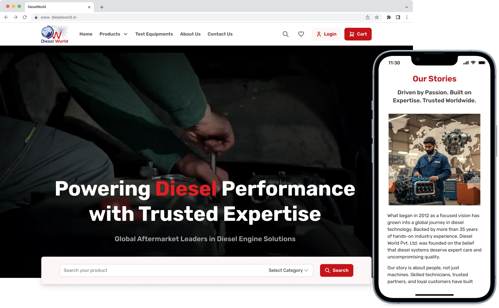
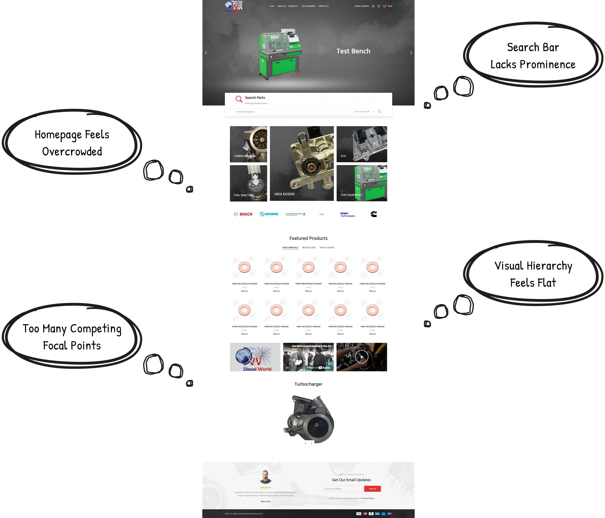
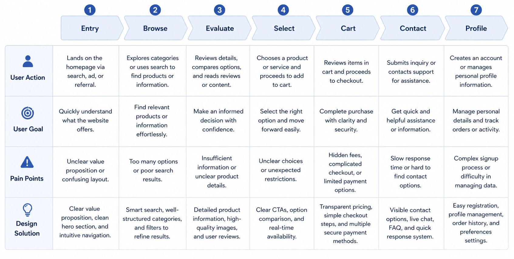
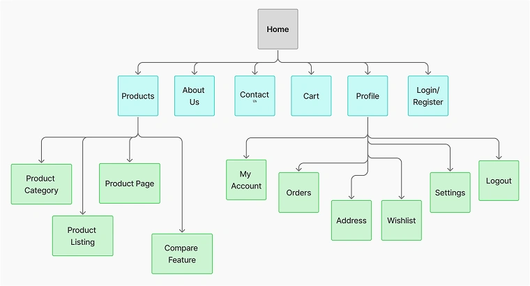
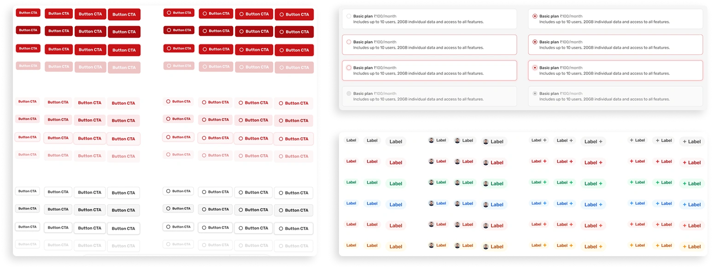
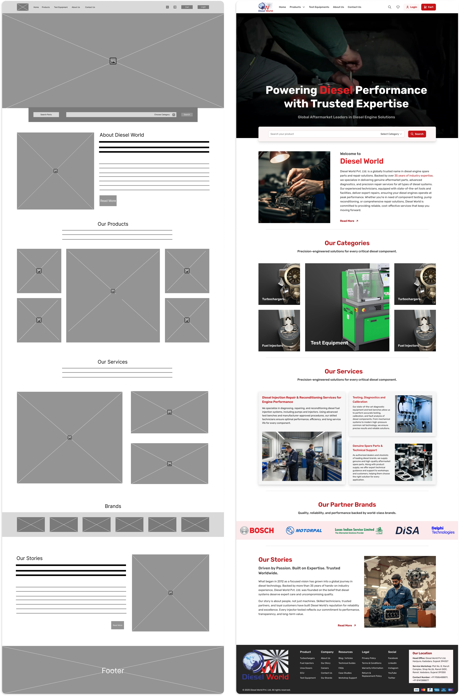
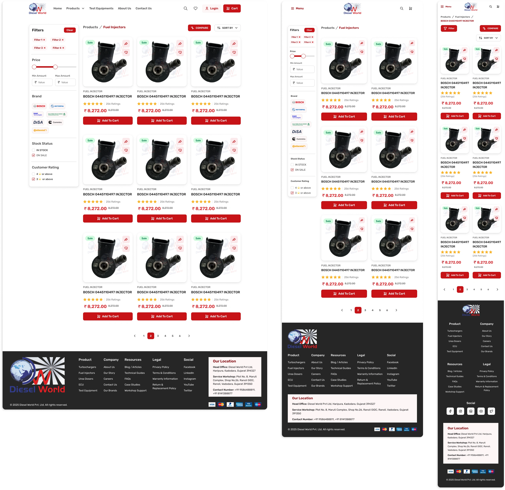
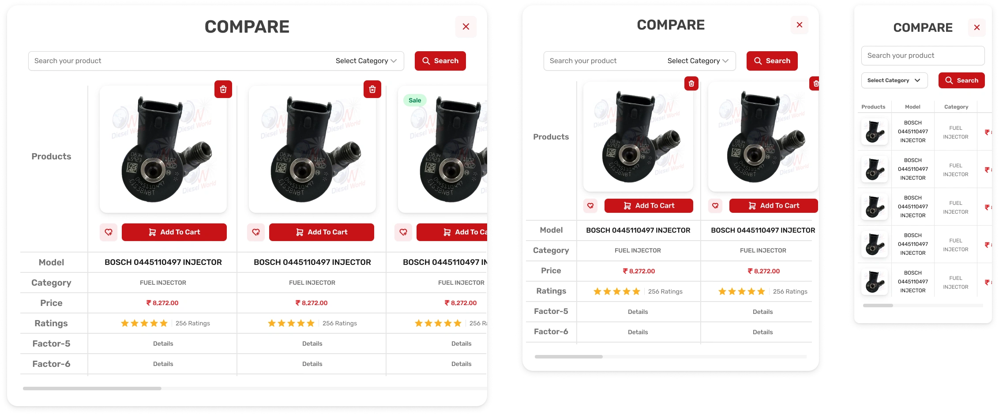
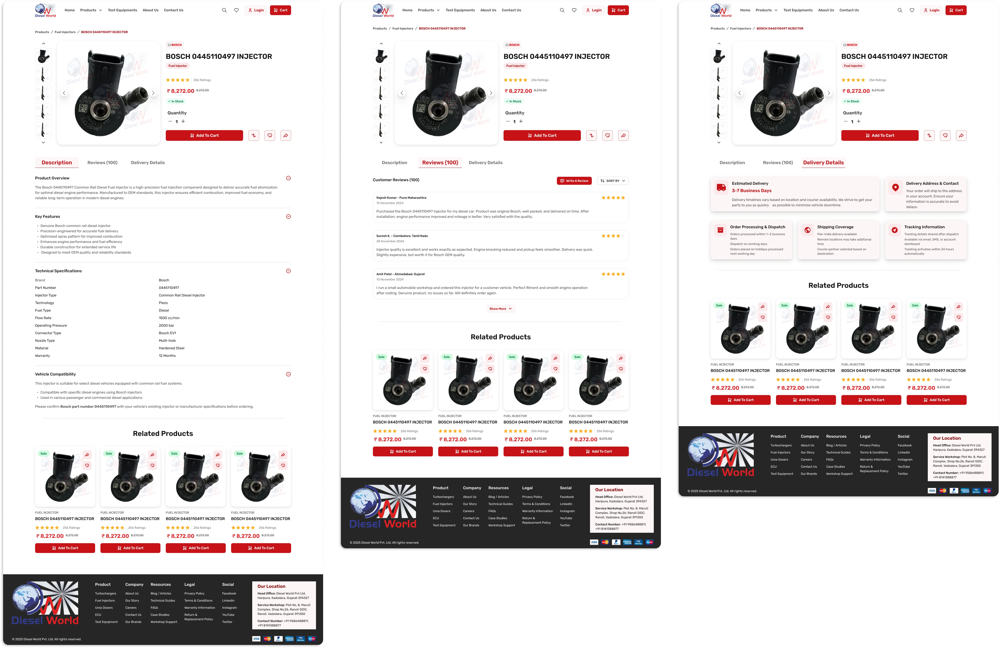
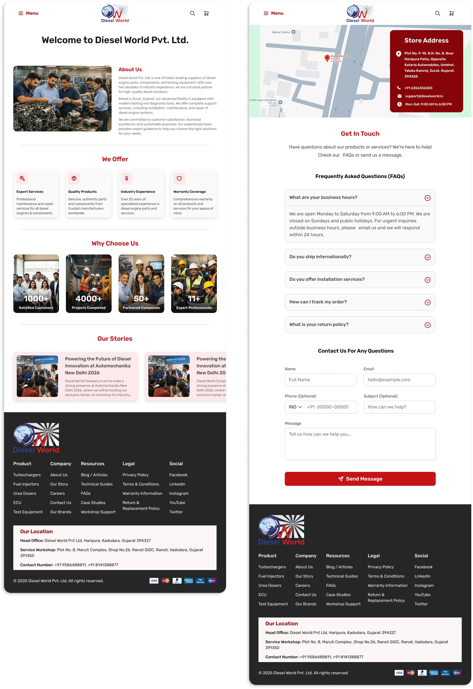

Revamping Diesel World E-Commerce Web
Transforming Legacy Automotive Retail Experiences

Overview
Diesel World is an established global aftermarket leader specializing in premium diesel engine solutions and components. Over a tight 3-month timeline, my core responsibility as the UI/UX design intern was to spearhead the structural redesign and responsive evolution of the company's digital platform.
While a commercial website features many moving parts, my assigned scope of ownership was strictly locked to designing the foundational user ecosystem. This focused lifecycle included the following core modules:
- Role: Discovery & Entry: The Home Page, About Us, and Contact layouts.
- Timeline: Product Category Listings, Detailed Product Pages, and the interactive Side-by-Side Product Comparison Engine.
- Scope: User Authentication (Login/Register), the Shopping Cart, and the deep-tier Account Profile Management matrix.
- Tools Used: Figma, FigJam
The Usability Friction
Before opening Figma, I audited the original live website to identify why it was failing to convert corporate clients and industrial buyers. The platform suffered from several critical structural flaws:
- Inconsistent Visual Grammar: The lack of a unified design language or standardized spacing guidelines created massive visual misalignment across pages, severely damaging the brand's professional credibility.
- Navigational Disorientation: Information layout lacked a defined visual hierarchy. Users struggled to understand or naturally navigate between key business sections, leading to high cognitive load and friction during product discovery.
- Zero Mobile Adaptability: The legacy system did not implement a responsive design grid. This resulted in broken layouts, un-clickable touch targets, and poor usability when viewed on tablet or mobile form factors.
- Scalability Bottlenecks: Because components were built statically without reusable asset rules, pushing updates or expanding the product catalog required repetitive design overhead.

Tactical Discovery
Competitive Analysis & Industrial Benchmarking
A benchmarking study was conducted to identify effective design patterns, user expectations, and conversion strategies across industrial B2B platforms. The research focused on product organization, technical data presentation, and streamlined procurement flows to build a scalable and user-friendly platform structure.
Industrial B2B platforms require a specialized layout approach focused on search speed, clear specification data, and highly structured technical listings. To understand successful conversion patterns in this sector, I analyzed leading digital competitors and substitute frameworks:
- TurboTech: Evaluated for its industrial layout structures and product category breakdown models.
- Boten Diesel: Analyzed to dissect presentation patterns for high-precision mechanical parts.
- OUS Tech: Studied to evaluate B2B workflow systems, navigation hierarchies, and user data presentation.
This benchmarking phase provided crucial insight into how modern automotive and industrial sites organize complex product parameters, manage filtered search strings, and build intuitive conversion pipelines.
Behavioral Mapping: The User Journey Map
To align my design choices directly with customer behavior, I constructed a comprehensive User Journey Map to track a user's experience across 7 distinct operational phases.
- The Framework: This behavioral map systematically tracks the user through Entry, Browse, Evaluate, Select, Cart, Contact, and Profile lifecycles.
- Friction vs. Resolution: At each stage, I isolated specific real-world user pain points—such as "insufficient information during evaluation" or "complex signup processes"—and mapped them directly to tangible UI solutions, like clear call-to-actions, side-by-side product comparisons, and simplified form flows.

Architectural Scoping: The Information Architecture (System IA)
With behavioral workflows defined, I translated those pathways into a rigid structural blueprint using an Information Architecture diagram to map content hierarchy and prevent navigational clutter.
- Structural Hierarchy: The architecture establishes the Homepage as the central launchpad, dividing user navigation into clean, intuitive main branches: Products, About Us, Contact, Cart, Profile, and Auth.
- Granular Data Nodes: To optimize the product browsing experience, the Products branch was designed to route smoothly into Category grids, structured listings, detailed product specs, and the compare feature. Concurrently, the Profile branch was mapped into clean, sub-tier nodes including Account Details, Order Tracking, Saved Addresses, and Wishlist states to ensure deep utility remains highly accessible.

Design Tokens Architecture
To ensure consistency, scalability, and efficient developer handoff, the Diesel World platform was built using a multi-layered design token architecture rather than relying on static color values and hardcoded design decisions. The system was organized within Figma Variables, creating a centralized source of truth for visual styling, responsive behavior, and component configuration.
- Brand Collection: Defines the platform's primitive color palette and foundational design values, serving as the source layer for all higher-level tokens.
- Alias Collection: Maps primitive tokens to semantic roles such as Primary, Success, Error, Warning, Information, Foundation, and Neutral, creating meaningful and maintainable design decisions.
- Mapped Collection: Connects semantic tokens to specific UI surfaces and components, including backgrounds, text, borders, cards, and interactive elements.
- Responsive Collection: Stores adaptive values for Desktop, Tablet, and Mobile breakpoints, enabling consistent spacing, sizing, and layout behavior across devices.
Design System Architecture
Modular Component Library
To support the platform's growing ecosystem of dashboards, product listings, filtering workflows, and administrative tools, a comprehensive component library was developed from scratch. Each component was designed as a scalable, reusable system with built-in responsiveness, semantic token integration, and clearly defined interaction states.
- Buttons: Configured with scalable size variants (S, M, L, XL), hierarchy levels (Primary, Secondary Color, Secondary Gray, Tertiary, Link), interactive states (Default, Hover, Focused, Disabled), and optional leading/trailing icon support.
- Badges: Lightweight status indicators used for categories, labels, promotions, and workflow states, powered by semantic color tokens for clear visual communication.
- Dropdowns: Structured selection components featuring searchable options, category grouping, validation states, and responsive behavior for complex product and part lookup workflows.
- Toggles: Binary selection controls used for immediate on/off actions such as settings, preferences, and feature activation.
- Checkboxes: Multi-select controls supporting selected, unselected, disabled, and indeterminate states for filtering and bulk-selection workflows.

Responsive High-Fi Delivery
Transforming the design system into a functional product experience required more than assembling components. It involved establishing clear visual hierarchy, balanced layouts, and responsive behaviors across every screen. Using the component library and token architecture as a foundation, I designed fully responsive interfaces for Desktop, Tablet, and Mobile breakpoints across the platform's core user journeys.
The final experience consisted of 9 key pages, organized into three primary categories:
Discovery & Branding
E-Commerce & Product Exploration
Transactional & Account Management
Home Page: Structural Evolution
The Home Page evolved from a low-fidelity structural blueprint into a polished, conversion-focused landing experience. The initial wireframe established content hierarchy and layout foundations, while the final design introduced strong visual storytelling, brand identity, and responsive interactions.
- Hero Section Transformation: Upgraded the placeholder header into a premium dark-themed hero section with the value proposition, "Powering Diesel Performance with Trusted Expertise," strengthening brand positioning and first impressions.
- Enhanced Content Hierarchy: Replaced generic content blocks with structured card-based layouts for better scannability and product discovery. Featured key categories like Turbochargers, Fuel Injectors, and Test Equipment, alongside a streamlined services grid.
- B2B Trust & Credibility: Converted the basic brand strip into a dedicated Partner Brands showcase featuring BOSCH, MOTORPAL, Lucas Indian Service Limited, DiSA, and Delphi, reinforcing industry expertise and trust.
- Editorial Storytelling: Transformed a placeholder section into the Our Stories module, using workshop imagery and branded content to highlight milestones, events, and participation in Automechanika New Delhi.
- Responsive Optimization: Optimized the experience across Desktop, Tablet, and Mobile, ensuring consistent hierarchy, readability, and usability on all devices.

Product Directory & Side-by-Side Compare Engine
The product directory was designed as a scalable, card-based catalog that adapts seamlessly across devices while maintaining consistent browsing and discovery patterns. To support technical purchasing decisions, a dedicated comparison interface was created to simplify side-by-side product evaluation.
- Responsive Product Grid: The layout dynamically adjusts from a 3-column grid on Desktop, to 2 columns on Tablet, and a single-column stack on Mobile, ensuring optimal readability and product visibility across all screen sizes.
- Adaptive Filtering Experience: Desktop users can access filtering tools through a dedicated sidebar containing price ranges, brand selections, and stock availability filters. On smaller screens, this functionality transforms into a slide-out filter drawer, preserving screen space while keeping advanced filtering easily accessible.
- Enhanced Browsing Controls: Active filter chips and sorting controls provide clear visibility into applied filters, allowing users to quickly refine product results and navigate large catalogs more efficiently.
- Mobile-Optimized Comparison View: Rather than compressing multiple columns into a limited viewport, the comparison experience transitions into a vertically stacked specification layout. This approach improves readability, eliminates excessive horizontal scrolling, and maintains a clear review experience on mobile devices.


Individual Product Page: High-Density Information Architecture
Designed for industrial B2B buyers, the product page organizes complex technical, commercial, and logistical information into a structured three-tab experience. This approach enables users to quickly validate specifications, assess credibility, and make informed purchasing decisions without overwhelming the interface.
- Above-the-Fold Conversion Zone: Features a breadcrumb trail, interactive product gallery, pricing information, stock status, quantity controls, and a prominent Add to Cart action to streamline product discovery and purchasing.
- Technical Specifications & Compatibility: Dedicated specification tab presenting key product details such as brand, model number, category, engine configuration, and material information, alongside an expandable vehicle compatibility section for fitment verification.
- Customer Reviews & Social Proof: Review interface containing sorting controls, review submission actions, and structured customer feedback cards that help establish product credibility and long-term performance validation.
- Shipping & Commercial Information: Logistics-focused section displaying delivery timelines, shipping policies, return guidelines, invoice information, and available offers in a highly scannable card-based layout.
- Related Products & Cross-Selling: A persistent product recommendation carousel encourages further exploration by surfacing complementary products and accessories with quick Add to Cart functionality.

Credibility & Operational Support: About Us & Contact Foundations
The About Us and Contact Us pages were redesigned to strengthen trust, improve clarity, and support high-intent B2B users. Both interfaces transform dense corporate information into structured, visually scannable modules that reinforce Diesel World's credibility while simplifying communication and inquiry workflows.
- Brand Story Foundation (About Us): Combines workshop imagery with a concise corporate narrative under "Welcome to Diesel World Pvt. Ltd." to immediately establish authenticity, scale, and domain expertise in diesel components and aftermarket distribution.
- Value Proposition Grid ("We Offer"): A four-card icon-based system highlighting core strengths—Expert Services, Quality Products, Industry Experience, and Warranty Coverage—enabling fast comprehension of business capabilities.
- Performance & Trust Metrics ("Why Choose Us"): A high-contrast data section presenting key credibility indicators such as 1000+ Satisfied Customers, 4000+ Projects Completed, 50+ Partner Companies, and 11+ Expert Professionals.
- Editorial Storytelling Module ("Our Stories"): A dynamic carousel showcasing real-world engagement and industry presence, including participation in events like Automechanika New Delhi 2026, reinforcing ongoing brand relevance.
- Contact & Support Interface: The Contact Us page integrates a map-based location block with a detailed address card, followed by structured FAQs using expandable accordions that address shipping, returns, tracking, and services.
- Lead Capture System: A streamlined contact form collects essential user information (Name, Email, Phone, Subject, Message) and concludes with a prominent Send Message CTA, enabling efficient inquiry handling and conversion-focused communication.

Strategic Reflection & Key Learnings
Redesigning the Diesel World platform was a key milestone in my early career, marking the shift from theory to real-world product design. My first internship in a niche industrial sector pushed me to solve complex usability challenges for corporate users and move beyond classroom exercises.
Key Growth Dimensions
- Real-World Problem Solving: This project shifted my perspective from simply creating attractive standalone screens to analyzing existing industrial platform vulnerabilities and systematically engineering intuitive layout solutions.
- Mastering Complex Information Density: Navigating detailed mechanical part specifications, side-by-side comparison matrices, and deep-tier nested profile states substantially leveled up my structural layout discipline and content prioritization skills.
- System-Driven Component Thinking: Building a complete design system from scratch taught me the value of scalability, multi-state token variations, and strict multi-device responsive rules.
- Designing for Enterprise Credibility: I learned how critical visual consistency and trust infrastructures—such as prominent partner brand matrices and transparent fulfillment cards—are to driving conversions in a competitive B2B sector
Looking Ahead
"This internship proved that good design isn't a luxury for industrial platforms; it is a core business requirement. While the immediate scope of this conceptual sprint is complete, the scalable foundation I have built ensures the ecosystem is fully prepared for future interactive testing, live deployment, and long-term expansion."